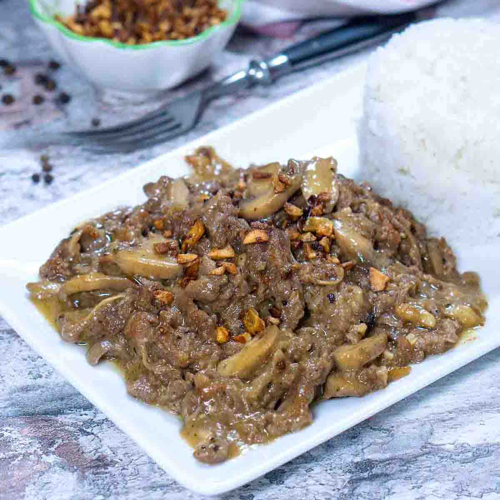

Garlic Pepper Beef(Inspired by Jollibee)

Garlic Pepper Beef is a dish from jollibee made with thinly sliced beef, garlic bits, and gravy to top it off. It is a childhood favorite for many Filipinos. Unfortunately, it has been phased out. This recipe is a homemade version of this dish so that people craving it can make it right at home.
Ingredients
Serves 2-4 people
- 1 pound thinly-sliced beef
- 1 tbsp soy sauce
- 1/2 tsp ground black pepper
For the gravy:
- 2 tbsp butter
- 1/2 tsp garlic power
- 1/2 Knorr beef cube
- 1 cup water
- 2 tbsp flour
- 1 tbsp sugar
- 1/2 tsp black pepper powder
Steps
- In a small bowl, combine beef with soy sauce then massage the meat while ensuring that each side of the meat is in contact with the sauce. Heat oil in a pan and stir fry the beef in medium heat until it turns brown. Transfer into a serving plate.
- To make the gravy, melt the butter in a pan in medium heat and add the flour. Whisk continously until it turns into a roux or a paste. Add beef cube and water then continue to whisk.
- Season with garlic powder, salt and pepper and continue to whisk and cook until it turns into a thick gravy. Add more water if the gravy becomes too thick
- Add the beef in the pan and stir. Add fried garlic then serve with steamed rice.
- Enjoy your homemade garlic pepper beef!
Credits to Panlasang Pinoy